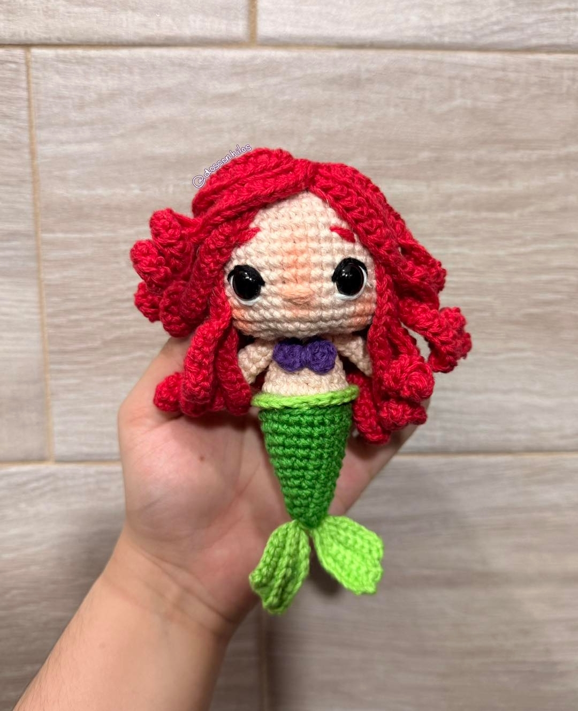
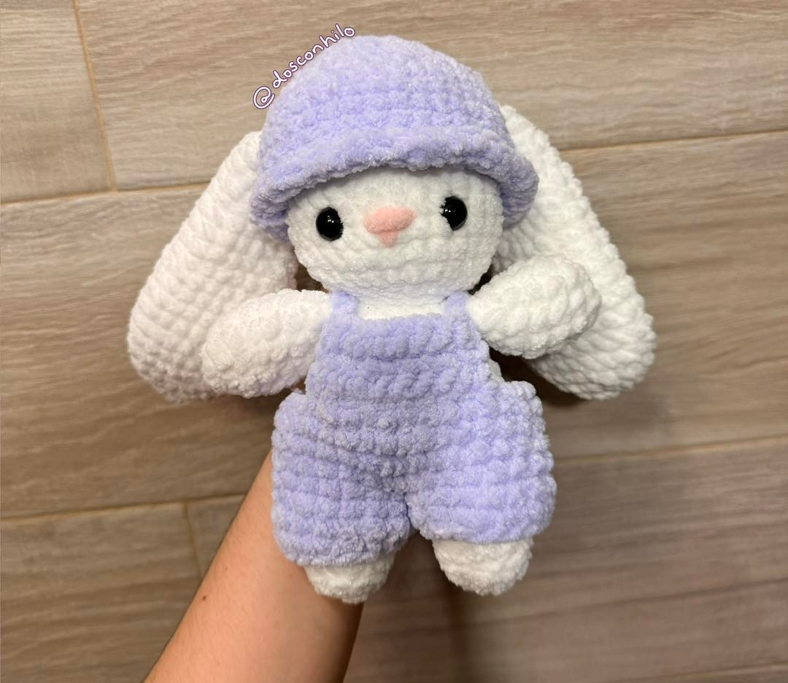
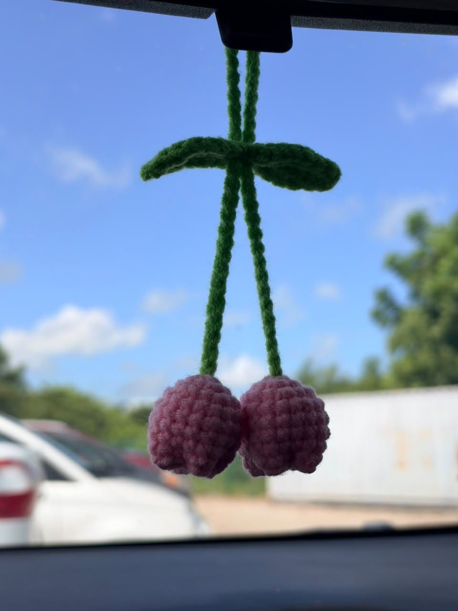
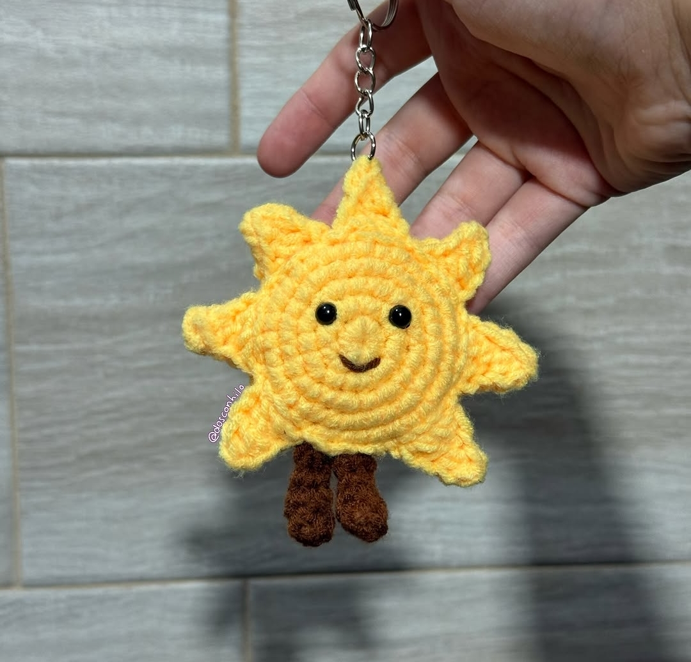

01 / A TU MEDIDA
Amigurumis
Personajes tejidos con detalle y personalidad. Cuéntanos qué tienes en mente.
Consultar por WhatsApp ↗Hecho a mano, con mucho corazón
Pequeñas creaciones tejidas a crochet para regalar, acompañar y llenar de ternura tus días. Cada puntada lleva tiempo, intención y cariño.

Un mundo de posibilidades
Explora algunas ideas y cuéntanos qué te gustaría tejer. Cada pieza se conversa y cotiza de forma personalizada.

Personajes tejidos con detalle y personalidad. Cuéntanos qué tienes en mente.
Consultar por WhatsApp ↗
Un detalle hecho a mano para regalar y conservar en cualquier ocasión.
Consultar por WhatsApp ↗
Pequeños compañeros tejidos para tus llaves, mochila o bolso favorito.
Consultar por WhatsApp ↗
Una idea especial toma forma con colores y detalles elegidos contigo.
Consultar por WhatsApp ↗
¿Tienes una idea distinta? Nos encantará escucharla y explorar juntas cómo convertirla en una pieza tejida.
Cuéntanos tu idea ↗
Creaciones temáticas para celebrar cada época del año, como este pato tejido para Halloween.
Consultar por WhatsApp ↗Las fotos identificadas como muestra son temporales; cada pieza se cotiza al conversar los detalles.
Nos encontramos pronto
Muy pronto llevaremos nuestras creaciones a dos exposiciones de emprendedores. Aquí anunciaremos los detalles para que puedas visitarnos.

24 DE OCTUBRE
Nos encuentras en Parque Tenek para compartir nuestras creaciones a crochet.
PRÓXIMAMENTE
Estamos preparando otra oportunidad para conocer nuestras piezas en persona.
¿Quieres saber cuándo estaremos? Pregúntanos por WhatsApp

Detrás de cada puntada
Un proyecto creado por las hermanas Fri y Andy, apasionadas por el tejido a crochet. Nos especializamos en la creación de amigurumis y llaveros elaborados de forma 100% artesanal. Creemos firmemente en el valor de lo hecho a mano, poniendo el corazón y muchas ideas en cada hilo para ofrecerte detalles especiales y únicos.
Una idea puede convertirse en hilo
Hablemos de diseños, colores y regalos personalizados. Cuéntanos para quién es y qué te gustaría crear; juntas le damos forma a la idea.
Platiquemos tu ideaNos encantará leerte
Escríbenos para consultar una idea, conocer opciones o empezar tu pedido. Estamos para ayudarte a darle forma.
Una idea, una pregunta,
un regalo especial…